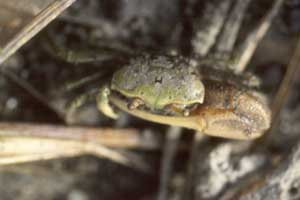

Fiddler Crabs
Uca spinicarpa
Spiny-wristed Fiddler Crab
Type
Information
Photos
Video
Art
References
Species List
Type Description
Uca spinicarpa
Rathbun, M.J. (1900) Synopses of North-American invertebrates. XI. The Catometopous or Grapsoid crabs of North America.
American Naturalist
34(403):583–592.
Information
Subgenus
Leptuca
Common Names
Spiny-wristed Fiddler Crab
Synonyms, Alternate Spellings, & Name Forms
Gelasimus tetragonon
var.
spinicarpa
,
Uca (Celuca) [crenulata] speciosa spinicarpa
,
Uca (Leptuca) spinicarpa
,
Uca (Minuca) spinicarpa
,
Uca spinicarpa
Geographic Range
Western Atlantic: USA (Northwest Florida) to Mexico
Download SVG line map of ranges.
Map data derived from:
Hopkins & Thurman (2010)
External Links
Encyclopedia of Life
Wikipedia
iNaturalist
GBIF
Photos

Video
No videos available at this time.
Art
References
Balbort, L., and C.L. Thurman, II (1997) Comparison of locomotor rhythms in sympatric
Uca
from the western Gulf of Mexico.
American Zoologist
37(5):186A.
Beinlich, B., and H.-O. von Hagen (2006) Materials for a more stable subdivision of the genus
Uca
Leach.
Zoologische Mededelingen
80(4):9–32.
Bott, R. (1954) Dekapoden (Crustacea) aus El Salvador. 1. Winkerkrabben (
Uca
).
Senckenbergiana biologica
35(3–4):155–180.
Chace, F.A., Jr., and H.H. Hobbs, Jr. (1969) The freshwater and terrestrial decapod crustaceans of the West Indies with special referece to Dominica.
United States National Museum Bulletin
292:1–258.
Crane, J. (1944) On the color changes of fiddler crabs (genus
Uca
) in the field.
Zoologica NY
29:161–168.
Crane, J. (1975)
Fiddler Crabs of the World: Ocypodidae: Genus Uca
. Princeton, NJ: Princeton University Press.
Fotheringham, N., and S.L. Brunenmeister (1975)
Common Marine Invertebrates of the Northwestern Gulf Coast
. Houston, TX: Gulf Publishing Company.
Heard, R.W., Jr. (1976) Microphallid trematode metacercariae in fiddler crabs of the genus
Uca
Leach 1814 from the northern Gulf of Mexico. Pp. 189: University of Southern Mississippi).
Heard, R.W., Jr. (1977) (Review) Jocelyn Crane, Fiddler Crabs of the World. Ocypodidae: Genus
Uca
.
Northeast Gulf Science
1(1):52–53.
Oliveira, L.P.H.d. (1939) Contribuição ao conhecimento dos crustaceos do Rio de Janeiro. Genero
Uca
(Decapoda: Ocypodidae).
Memórias do Instituto Oswaldo Cruz
34(1):115–148.
Powers, L.W. (1977) A catalogue and bibliography to the crabs (Brachyura) of the Gulf of Mexico.
Contributions in Marine Science
20(Supplement):1–190.
Rathbun, M.J. (1900) Results of the Branner-Agassiz expedition to Brazil. I. The decapod and stomatopod Crustacea.
Proceedings of the Washington Academy of Sciences
2:133–156.
Rathbun, M.J. (1900) Synopses of North-American invertebrates. XI. The Catometopous or Grapsoid crabs of North America.
American Naturalist
34(403):583–592.
Rathbun, M.J. (1918) The grapsoid crabs of America.
United States National Museum Bulletin
97:1–461.
Salmon, M., and S.P. Atsaides (1968) Behavioral, morphological and ecological evidence for two new species of fiddler crabs (genus
Uca
) from the Gulf Coast of the United States.
Proceedings of the Biological Society of Washington
81:275–290.
Salmon, M., and S.P. Atsaides (1968) Visual and acoustical signalling during courtship by fiddler crabs (genus
Uca
).
American Zoologist
8(3):623–639.
Salmon, M., and K.W. Horch (1972) Acoustic signalling and detection by semiterrestrial crabs of the family Ocypodidae. Pp. 60–96 in
Behavior of Marine Animals Volume 1: Invertebrates
, H.E. Winn and B.L. Olla, eds., Volume 1. New York: Plenum Press.
Thurman, C.L., II (1981)
Uca marguerita
, a new species of fiddler crab (Brachyura: Ocypodidae) from eastern Mexico.
Proceedings of the Biological Society of Washington
94(1):169–180.
Thurman, C.L., II (1987) Intrageneric allometric variation and egg production in fiddler crabs (
Uca
).
American Zoologist
27(4):162A.
Thurman, C.L., II (1994) Evaporative water loss and corporal temperature in sympatric fiddler crabs (
Uca
).
American Zoologist
34(5):31A.
Thurman, C.L., II (1996) Integumental water permeability of
Uca
from south Texas.
American Zoologist
36(5):67A.
Thurman, C.L., II (2000) Variance in osmoregulation among sympatric fiddler crabs, genus
Uca
, from Texas.
American Zoologist
40(6):1234–1235.
Thurman, C.L., II (2001) Osmoregulation by
Uca
from the temperate coasts of eastern North America.
American Zoologist
41(6):1607.
Thurman, C.L., II (2004) Osmoregulation in fiddler crabs: A review.
Integrative and Comparative Biology
44(6):652.
von Hagen, H.-O. (1970) Verwandtschaftliche Gruppierung und Verbreitung der Karibischen Winkerkrabben (Ocypodidae, Gattung
Uca
).
Zoologische Mededelingen
44(15):217–235.
Weygoldt, P. (1977) Communication in crustaceans and arachnids. Pp. 303–333 in
How Animals Communicate
, T.A. Sebeok, ed. Bloomington, Indiana: Indiana University Press.
{kind=link}